Still Life
Objects hold their own quiet biographies.
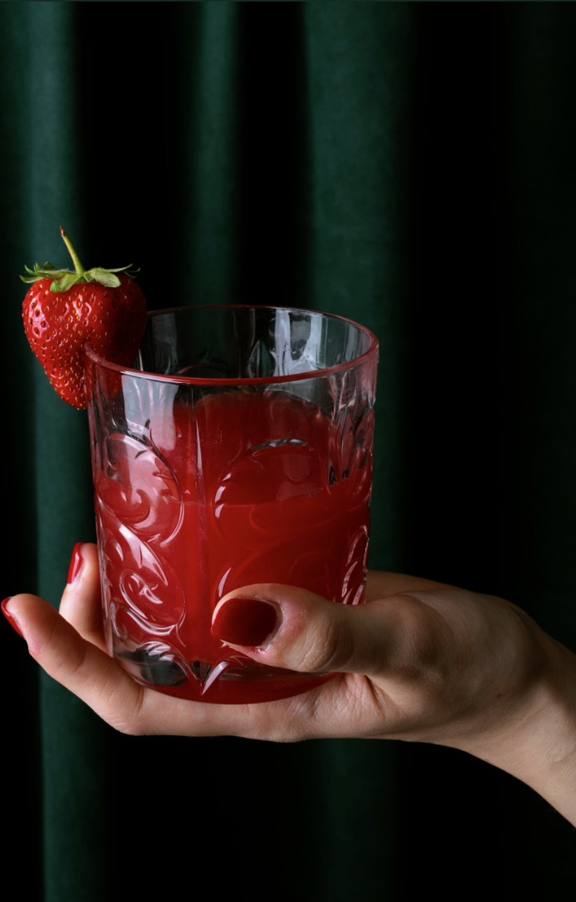
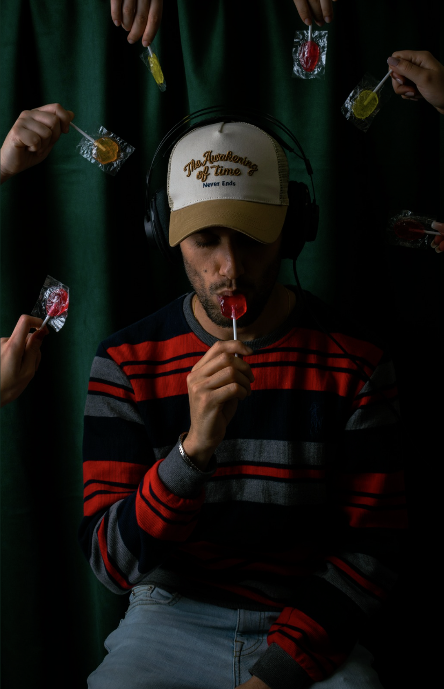
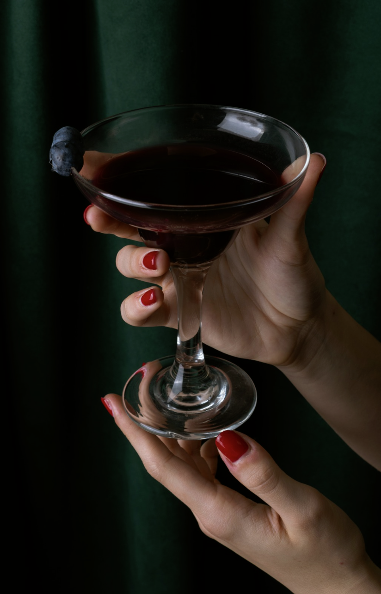
Portrait
Faces caught between the pose and the person — a study of presence, held still for a fortieth of a second.
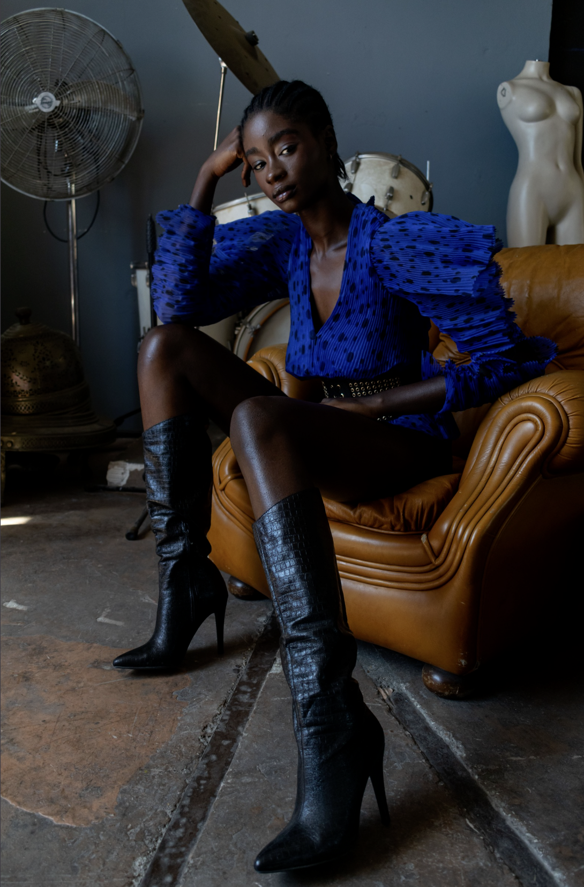
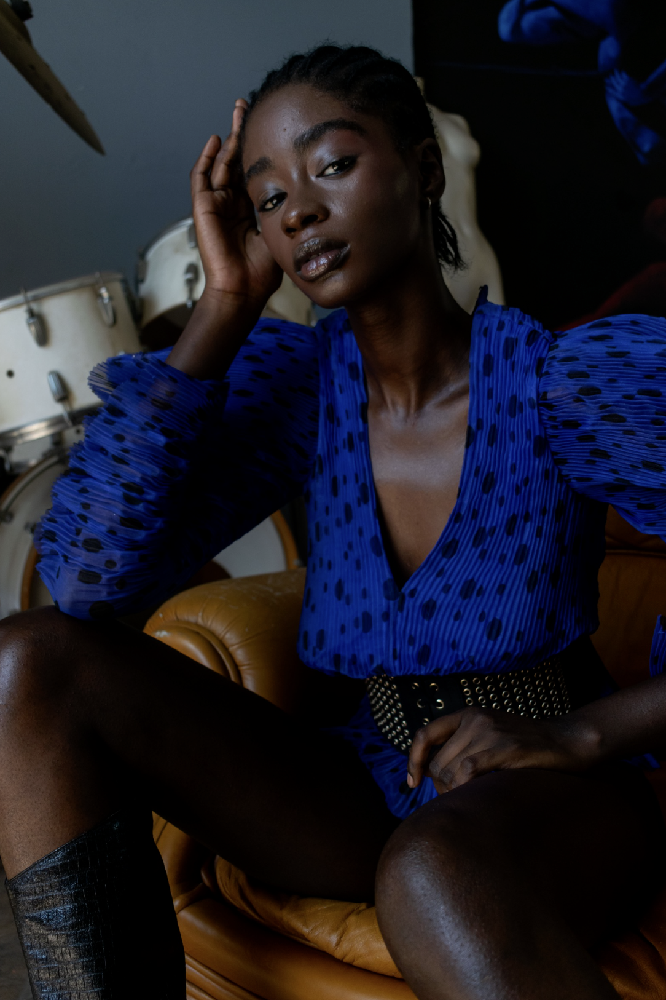
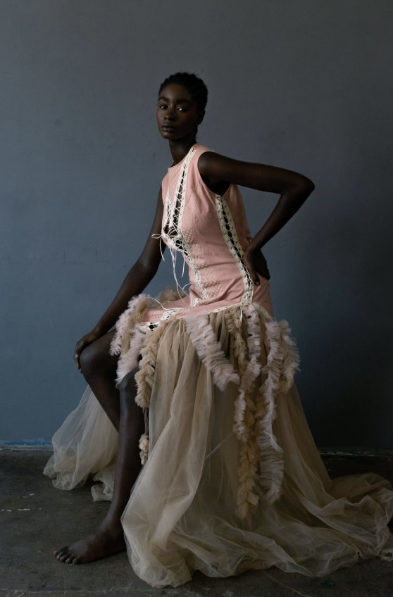
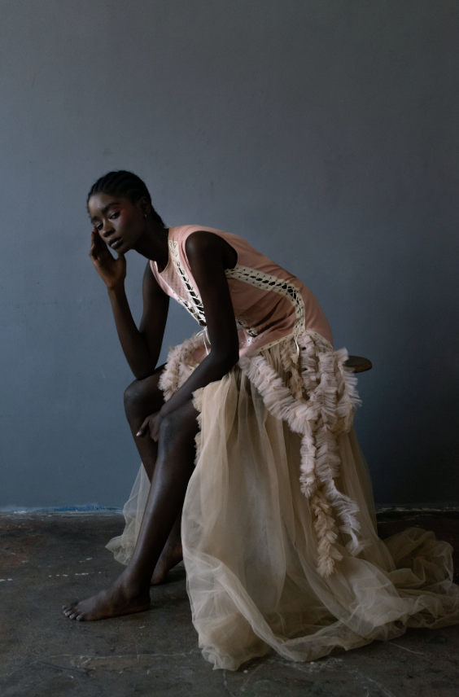
Street
Rome doesn't wait to be photographed. These frames are shot on foot, in the middle of everything, never staged.
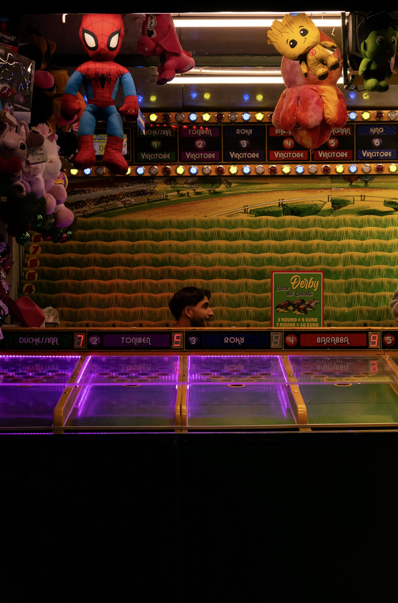
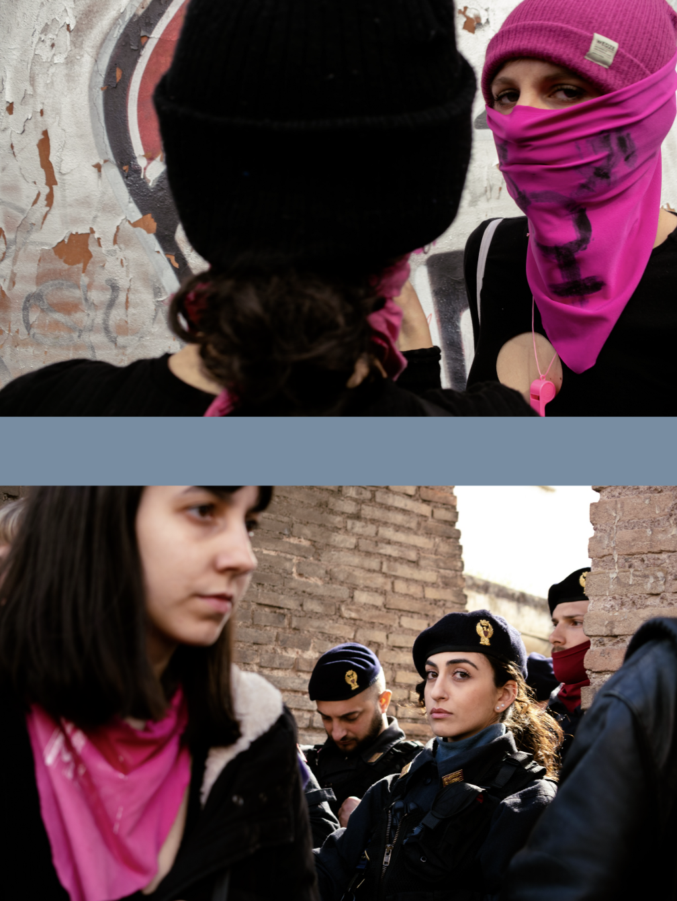
Events
The unrepeatable moments documented as they happened, never staged again.
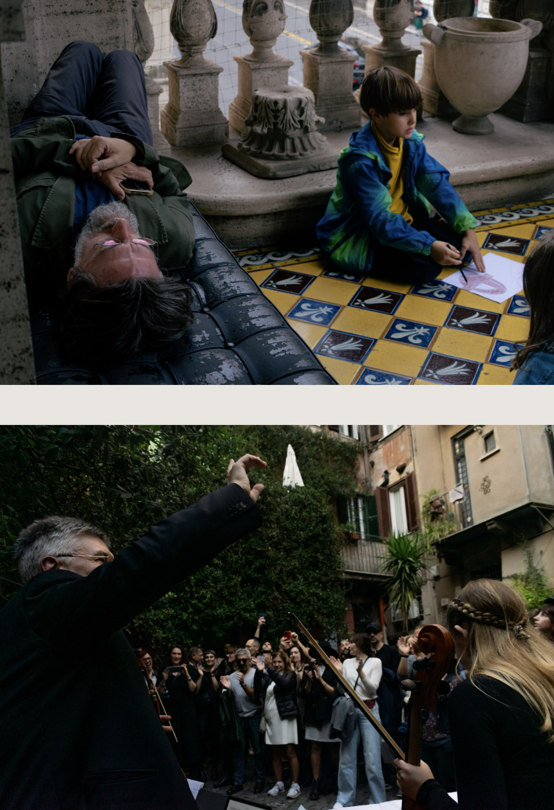
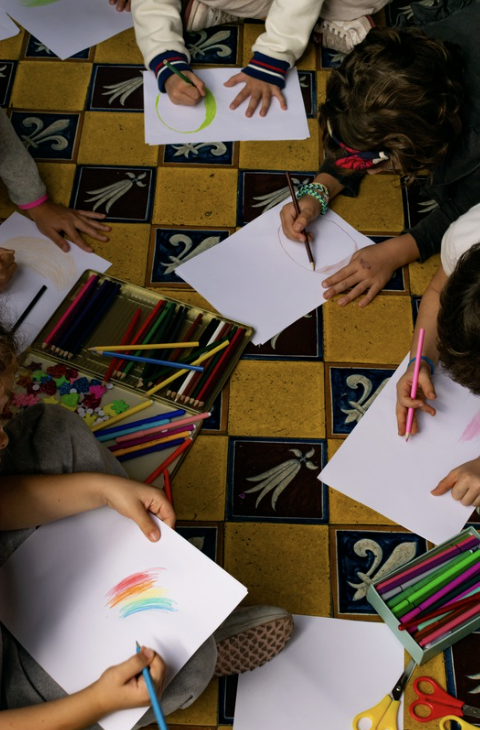
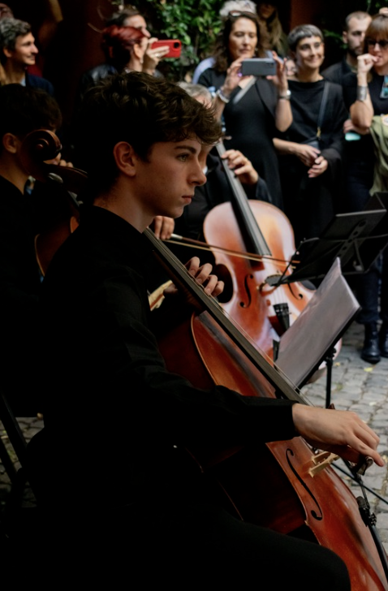
I don't wait for the light —
I go looking for it.
Vittoria Serafini is a Rome-based photographer known for a proactive, on-the-move approach: scouting locations at odd hours, chasing weather instead of avoiding it, and staying ready to shoot the moment before it becomes obvious.
Over 5 years behind the lens, she's built a practice that moves fluidly between disciplines — still life one morning, a wedding the next evening — always shooting with the same instinct for the unposed, unrepeatable frame.
- 5Years behind the lens
- 6Cities shot in
- 30+Weddings & events documented
Let's create something timeless.
Available for bookings in Rome and for travel. Reply within 48 hours.